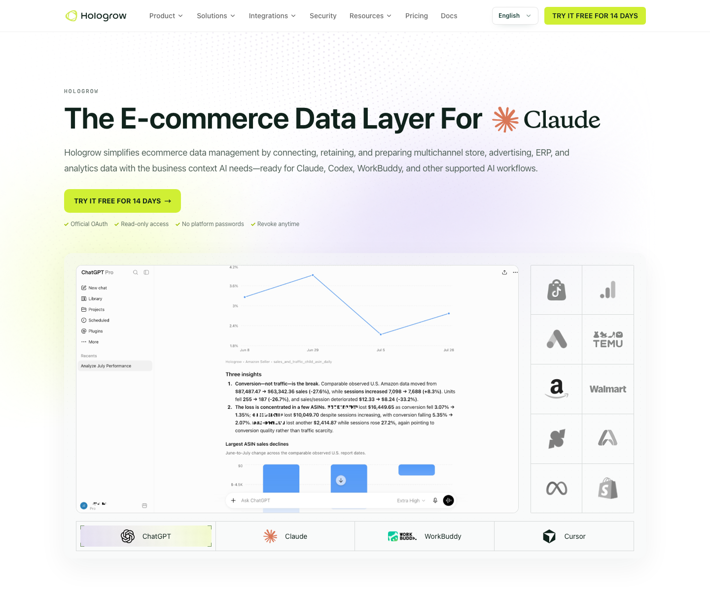
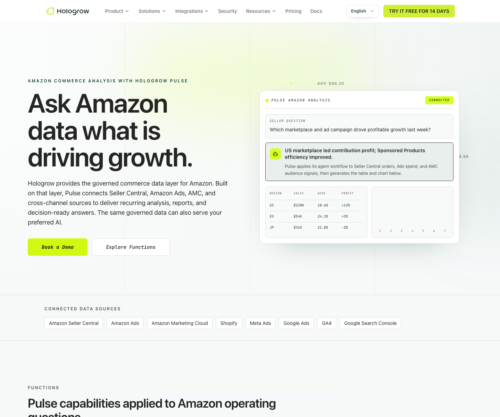

What is Hologrow’s role in omnichannel analytics?
Hologrow prepares synchronized commerce, advertising, analytics, and operational data for analysis in the AI client your team chooses. It replaces repeated exports and fragile joins with inspectable source tables, mappings, reporting dates, and read-only access.
Hologrow is the data-preparation layer between commerce platforms and the AI environment a team already prefers. It authorizes supported sources, synchronizes their available history, documents tables and row grain, and exposes the prepared records through hosted MCP, API, Pulse, or supported data destinations. The AI performs the analysis; Hologrow supplies the governed evidence and business context behind it.
This changes the starting point for a recurring review. Instead of downloading a Seller Central report, an advertising export, a storefront file, and an ERP workbook every Monday, the operator begins with synchronized sources whose account scope and reporting dates can be inspected. The same connected layer can serve ChatGPT, Claude, Codex, WorkBuddy, and other supported MCP clients.

The advantage is not a claim that every platform metric means the same thing. Amazon ordered revenue, Shopify or Shoplazza order value, Meta attributed value, Google Ads conversion value, and GA4 purchase revenue are different measurements. Hologrow makes them available in one investigation while preserving source, table, period, currency, and definition so the AI can explain the difference rather than silently add them together.
Use omnichannel analytics for a named decision: which product needs a pricing review, whether paid-media growth translated into collected orders, where contribution weakened, which channel should receive constrained inventory, or what changed since the last WBR. A vague request for “one source of truth” is less useful than a question with an owner and an acceptance test.
Which channels and data sources can Hologrow bring into one analysis?
Hologrow can combine Amazon commerce and ads, AMC, DTC stores, Google and Meta advertising, GA4, Search Console, ERP context, and additional supported commerce sources. Availability is workspace-specific, so verify the exact tables and dates before promising an analysis.
Hologrow’s public Amazon analysis page explicitly places Seller Central, Amazon Ads, AMC, Shopify, Meta Ads, Google Ads, GA4, and Search Console in the connected-source picture. Its product and integration pages also document Shoplazza and Lingxing workflows. This is a useful planning list, not a substitute for checking the Integrations screen and data schema in the specific workspace.
Coverage can differ by source, account type, region, permission, plan, and implementation stage. A connector label does not promise every table, breakdown, or historical period. Before planning an analysis, ask Hologrow or the connected AI to list platforms, available tables, earliest and latest dates, and the last successful sync.
Keep output clients separate from input sources. ChatGPT, Claude, Codex, Cursor, WorkBuddy, Gemini CLI, Doubao, or another supported MCP client can analyze the same prepared layer; connecting an AI client does not automatically add new commerce evidence. The business question still depends on the underlying source accounts being connected and ready.
| Source family | Publicly described connections | Questions they can support |
|---|---|---|
| Amazon commerce | Seller Central and Vendor Central | Orders, sales and traffic, fees, refunds, inventory, purchase orders, shortages, and chargebacks when the required tables are available |
| Amazon media | Amazon Ads and Amazon Marketing Cloud; confirm DSP coverage in the workspace | Campaign efficiency, search terms, product targets, audience evidence, media paths, and paid-versus-organic product performance |
| DTC commerce | Shopify and Shoplazza; actual tables differ by connector | Orders, line items, products, variants, payments, discounts, refunds, customer or store analytics where permitted |
| Paid media | Google Ads and Meta Ads | Spend, campaigns, ad groups or ad sets, ads, keywords, search terms, attributed outcomes, and available breakdowns |
| Web and search | Google Analytics 4 and Google Search Console | Acquisition, landing pages, events, funnel behavior, organic queries, pages, countries, and devices where exposed |
| ERP and operations | Lingxing ERP and maintained business-context tables | Product relationships, bundles, FBA inbound shipments, finance fees, logistics reconciliation, inventory context, costs, targets, and mapping rules |
| Additional commerce sources | TikTok Shop and other platform connections displayed by Hologrow | Extend the analysis only after confirming that the required account, tables, permissions, history, and refresh pattern are active |
How easy is it to connect omnichannel data to Hologrow?
Connect each source through its supported authorization flow, confirm tables and dates in Data Explorer, authorize the AI client, and add product mappings or business definitions. The setup avoids repeated CSV work while keeping source access read-only and revocable.
The standard workflow is connect, verify, and ask. In Hologrow Integrations, select a supported source and complete its official authorization flow. Amazon Seller and Amazon Ads are separate connections because they expose different data. A storefront, GA4 property, Google Ads account, Meta Ads account, AMC instance, or ERP connection is authorized separately as needed.
Hologrow uses read-only access for supported data workflows. The team does not hand an AI model platform passwords, and Hologrow does not use the data connector to change bids, budgets, listings, inventory, prices, refunds, or orders. Access can be revoked, which separates analysis from operational execution.
After authorization, wait for the required tables to sync. Open Data Explorer to check the selected account, table status, earliest and latest dates, and freshness. A successful OAuth screen proves access was granted; it does not prove a full month of orders, every marketplace, or the product-cost field needed for the question is ready.
Next, connect the preferred AI client from Hologrow’s AI Platforms area. For a custom MCP workflow, authorize Hologrow in the supported client and begin by listing the connected platforms. For the Hologrow API, create the appropriate key and use the documented read-only endpoints. For Pulse, work in Hologrow’s own AI workspace and configure the recurring review.
The last setup step is business context: map internal product families to source identifiers, record reporting currency and calendar, and document the approved revenue, refund, cost, and contribution definitions. This is where Hologrow differs from a collection of direct APIs. It maintains the connection and schema while giving the AI context that raw fields do not contain.
A first pilot does not need every company system. Connect one marketplace, one DTC store, the relevant ad sources, and the cost input required for one closed-period question. Reconcile those totals before adding more channels.
How granular can Hologrow’s cross-channel analysis get?
Depending on the source, Hologrow can support analysis from channel totals down to marketplace, ASIN, SKU, order line, campaign, keyword, search term, product target, landing page, event, fee, refund, shipment, and day. Every answer should retain the original row grain and join keys.
Granularity is valuable only when the row grain and join keys are respected. Joining a daily campaign table directly to order lines can multiply sales; joining a parent ASIN to child variants can hide color or material differences. Ask the AI to state the source table, row meaning, join key, filters, and unmatched record count before accepting a product-level conclusion.
The public Google Ads integration page documents campaign, keyword, search-term, and ad-level daily tables. The Shoplazza integration page documents orders, line items, variants, transactions, refunds, and daily analytics. The Lingxing integration page documents product relationships, FBA shipments, finance fees, and logistics records. Actual Shopify, Meta, AMC, and other source coverage should be checked against the connected workspace.
Product mapping is separate from customer identity. Matching an Amazon ASIN with a DTC variant allows product-family economics; it does not prove that the same person shopped on both channels. Keep source-defined customer and new-to-brand measures in their original scope unless a reliable, permitted identity method exists.
| Business layer | Possible grain | Example decision |
|---|---|---|
| Amazon retail | Marketplace × date × ASIN or SKU; order, fee, refund, inventory, traffic, and fulfillment records where available | Find an ASIN whose unit sales rose while contribution per unit fell after fees, returns, and advertising |
| Amazon advertising | Portfolio, campaign, ad group, ad, keyword, search term, product target, and day | Identify the search terms consuming spend without enough product-level payback |
| AMC | Permitted audience, event, campaign, and path analyses produced by approved AMC queries | Compare exposure sequences or new-to-brand behavior without treating AMC as the store’s order ledger |
| DTC commerce | Store, order, line item, product, variant, transaction, discount, payment, and refund when the connector exposes them | Separate a product-mix change from a conversion or refund problem |
| Google and Meta ads | Account, campaign, ad group or ad set, ad, keyword or search term, day, and permitted breakdown | Locate the campaign or audience change behind higher acquisition cost |
| GA4 and Search Console | Property, date, channel, campaign, landing page, page, event, query, country, and device where available | Find whether traffic grew on pages that failed to progress from view to checkout |
| ERP and business context | Product bundle, listing relation, shipment, fee entry, logistics reconciliation, currency rate, target, or maintained mapping | Explain why platform revenue grew while landed-cost or inbound-logistics pressure reduced contribution |
How could Babeside analyze one product across Amazon and its DTC store?
Map one Babeside product family across Amazon and the connected DTC store, then compare demand, advertising, fees, refunds, cost, and inventory under aligned dates. The worked design below uses the public Sunny 17-inch product and synthetic numbers—not actual customer performance.
Use Babeside’s publicly listed Sunny 17-inch reborn baby doll as the product family for a worked design. Assume the authorized Amazon account and connected DTC store contain the corresponding sellable item. The workflow below uses public catalog facts and entirely illustrative performance values; it does not disclose or claim actual Babeside sales, costs, advertising, customer, or Hologrow results.
First create the product crosswalk. The internal family might be `SUNNY-17`, but the Amazon child ASIN, marketplace SKU, DTC product ID, DTC variant ID, barcode, material, body type, included accessories, pack quantity, and selling currency remain separate fields. Map two records only when they represent the same sellable item. A cloth-body version, full-silicone version, interactive version, or different accessory bundle should not be combined merely because the title contains “Sunny.”
Choose one closed four-week US period and a comparison period with equal weekdays. For Amazon, request ordered units and sales, sessions, unit-session percentage, Buy Box or availability signals where available, Amazon Ads spend and attributed sales, organic versus paid contribution, search terms, product targets, FBA or referral fees, refunds, and inventory. For the connected DTC store, request paid orders, order lines, discounts, payment movements, refunds, variant units, website sessions, product views, add-to-cart, checkout and purchase events, plus Google and Meta spend. Add effective-dated product cost and logistics context from ERP or a maintained business table.
Now require source-level reconciliation. Amazon order sales must reconcile to the selected Seller Central population; DTC net sales must reconcile to the selected store order population; advertising expense must reconcile by account; GA4 purchases stay a behavioral measurement rather than replacing paid orders. Convert currencies under one documented policy, align business dates, and show the percentage of units with mapped cost and product identity.
Consider this synthetic result: Amazon sessions for `SUNNY-17` rise 22%, Amazon ad spend rises 30%, units rise only 4%, and contribution per unit falls from $18 to $11 after advertising and fees. On the DTC side, product-detail views rise 18%, paid orders rise 15%, refund-adjusted contribution rises 12%, and the main variant remains in stock. These figures are teaching values, not Babeside data.
Hologrow should not summarize that as “DTC caused Amazon weakness” or “Meta drove the store gain.” A defensible answer is narrower: Amazon traffic expanded faster than conversion and product-level contribution; DTC demand and collected orders improved in the same period; the Amazon search-term and product-target expansion deserves review before more budget is added. The team should then inspect the terms with the largest spend increase, confirm price and Buy Box stability, check return maturity, and test whether the Amazon offer differs from the DTC bundle.
The decision packet can recommend a bounded action: pause or lower bids on clearly unproductive Amazon terms for human review, protect inventory for the higher-contribution sellable item, preserve the DTC campaign until a mature refund window is available, and revisit after one complete week. It should show the downside—Amazon volume may decline—and the reversal condition.
This example also shows why Hologrow’s business context matters. Without the product crosswalk, “Sunny” variants fragment across ASINs and store IDs. Without cost and fee evidence, the AI can rank revenue but not contribution. Without source definitions, attributed value may be counted as additional sales. Hologrow prepares those relationships so the AI can answer a specific commercial question rather than improvise them.
| Workstream | Required evidence | Decision supported |
|---|---|---|
| Product identity | ASIN, Amazon SKU, DTC product and variant IDs, barcode, material, pack quantity, accessory set, internal family | Compare like with like and expose unmapped or ambiguous versions |
| Amazon demand and economics | Units, ordered sales, sessions, conversion, ad spend, terms or targets, fees, refunds, inventory | Separate demand growth from paid traffic, availability, and contribution changes |
| DTC demand and economics | Paid orders, line items, discounts, refunds, variant units, product views, checkout events, Google and Meta spend | Separate traffic, funnel, offer, refund, and media effects |
| Cost and capacity | Effective-dated unit cost, payment and fulfillment expense, logistics, available inventory, stockout periods | Compare contribution and decide whether inventory or budget is the constraint |
| Review output | Reconciled totals, source tables, dates, definitions, mapping coverage, missing evidence, sensitivity, action owner | Approve a bounded test and define when to reverse or expand it |
Which cross-channel questions can Hologrow answer for a commerce team?
Use Hologrow for decisions that require two or more systems: product contribution, paid-media payback, inventory allocation, search-term review, payout reconciliation, or recurring WBR and MBR reporting. Each answer should end with source evidence, limitations, and an owned next action.
Hologrow is especially useful when the question crosses system boundaries. One platform can explain its own data, but it cannot know whether another channel’s orders, fees, stock, or refund pattern changed at the same time. The layer allows the AI to query each prepared source while retaining its definition.
For Amazon operations, Hologrow Pulse combines Seller Central, Amazon Ads, AMC, and cross-channel sources for recurring questions, tables, charts, and files. The same governed data can also serve another supported AI client, which lets a team keep its preferred working environment instead of adopting a separate dashboard for every question.

Recurring delivery is another advantage. A WBR can use fixed periods, account scope, metric rules, exception thresholds, and output format. An MBR can add mature returns, full-month fees, product-family contribution, marketplace comparison, and decisions from the prior review. Automation does not remove review: if a source is late or mapping coverage falls, the report should flag the gap rather than publish a false decline.
| Business question | Sources to combine | Useful output |
|---|---|---|
| Which products grew revenue but lost contribution? | Store or marketplace orders, ads, fees, refunds, product cost, fulfillment | Product-level contribution bridge with missing-cost coverage |
| Did stronger paid-media reporting translate into business growth? | Google or Meta Ads, GA4, DTC orders, Amazon sales where relevant | Side-by-side trends with attribution differences and break-point diagnosis |
| Where should constrained inventory go? | Amazon and DTC velocity, contribution, forecast, inventory, inbound shipments | Channel allocation scenarios with service and stockout risks |
| Which search terms or targets require review? | Amazon Ads or Google Ads terms, product orders, fees, cost, inventory | Spend and contribution review at the supported keyword or target grain |
| Why did a payout or margin report change? | Orders, refunds, fees, settlements, ERP finance entries, effective-dated cost | Reconciliation bridge instead of a generic profitability chart |
| What belongs in the next WBR or MBR? | Named accounts, approved KPIs, mappings, targets, prior decisions, current exceptions | Repeatable HTML report, tables, charts, spreadsheets, and owned follow-up actions |
What should the first Hologrow omnichannel review deliver?
Deliver a review that another operator can reproduce: connected-source inventory, reconciled totals, product mapping coverage, comparable channel economics, unresolved gaps, and one bounded action. Save the scope and definitions so the same workflow can become a reliable WBR or MBR.
Start with one product family, one marketplace, one DTC store, the relevant ad accounts, and one complete reporting period. Before calculating, inventory connected platforms, tables, accounts, date coverage, currencies, and sync freshness. State which required evidence is missing.
The output should contain five parts: a direct answer; reconciled source totals; a product or channel bridge; competing explanations with evidence; and a bounded next action with an owner. Include mapping coverage and unmatched identifiers so the reader can see whether the comparison represents 100% or only part of the business.
Keep store orders, marketplace sales, ad-attributed value, GA4 purchase events, and AMC outcomes in distinct labeled measures. Combine them only under an approved calculation. Preserve original currency, business dates, attribution windows, refund timing, and product packaging.
Ask the AI to cite tables and row grain, not merely platform names. A reviewer should be able to select one number—such as Amazon advertising spend for a product family or DTC paid orders for a variant—and reproduce it from the specified records.
End with a reusable specification: prompt, scope, metric definitions, mapping table, exception rules, output template, review cadence, and approval owner. That turns a one-off answer into a WBR, MBR, channel audit, or anomaly investigation that can be repeated without rebuilding the data packet.
Use Hologrow to compare the named US Amazon account and connected DTC store for the last complete four weeks versus the prior four weeks. First list connected platforms, tables, account scope, date coverage, currency, freshness, and missing inputs. Map the named product family across ASINs, SKUs, product IDs, and variants with pack-size and material checks. Reconcile Amazon orders, DTC paid orders, ad spend, fees, refunds, available costs, and inventory. Keep ad-attributed value and GA4 purchases separate from order sales. Show mapping and cost coverage, product-level contribution, the three largest changes, competing explanations, and one bounded action with owner, downside, review date, and reversal condition. Cite every source table and do not infer cross-channel customer identity or execute changes.
Run the prompt first on a closed period that finance and channel owners can review. If the source totals do not reconcile or a plausible missing cost could reverse the recommendation, stop at the exception list. A transparent incomplete answer is safer than a precise-looking channel ranking built on partial evidence.
Once the pilot is reproducible, add another marketplace, product family, or recurring output without changing definitions mid-series. The durable advantage is the prepared relationship between sources, business context, and AI—not a static dashboard screenshot.
Customer questions, answered
Does Hologrow support Shopify, Amazon, Meta Ads, Google Ads, GA4, AMC, and ERP data?
Hologrow’s public product pages describe these source families, including Seller Central, Vendor Central, Amazon Ads, AMC, Shopify, Shoplazza, Meta Ads, Google Ads, GA4, Search Console, and Lingxing ERP. Coverage differs by connector and workspace. Confirm the actual account, tables, permissions, date range, and refresh status before committing to a specific analysis.
Can Hologrow identify the same customer across Amazon and Shopify?
Do not assume it can. Product and channel analysis can be performed with aggregate or product-level evidence without identifying the same person. Amazon and DTC customer measures use different identities, permissions, and definitions. A unique omnichannel customer count requires a reliable and permitted matching method; otherwise report each source-defined customer measure separately.
Can Hologrow automatically change bids, budgets, listings, inventory, or orders?
No. Hologrow’s supported data connections are read-only. The AI can identify a campaign, product, fee, refund, or inventory exception for a human to review, but operational changes remain in the source platform and its approval process. This boundary prevents an uncertain analytical conclusion from becoming an unreviewed account change.
Sources & editorial notes
- Hologrow
- Hologrow Amazon commerce analysis
- data schema
- Google Ads integration page
- Shoplazza integration page
- Lingxing integration page
- Babeside product page
- Babeside
Sources checked October 15, 2026. Original instructional examples are labeled and are not customer results. Product capabilities, eligibility, and source coverage can change. No independent hands-on benchmark or named expert review is claimed.